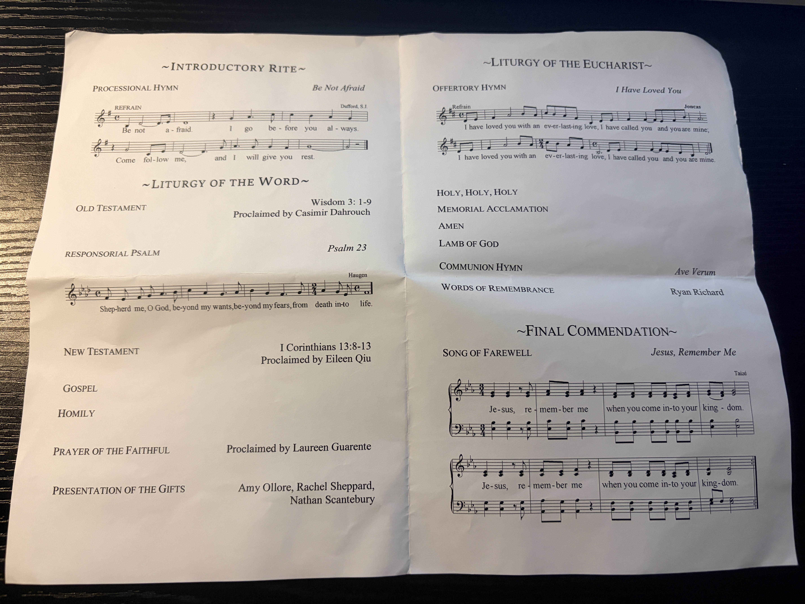
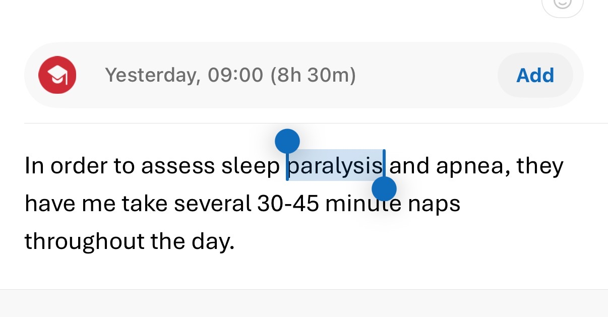

知道Mike去世后的第二晚，我就没睡好，躺在床上我就感觉自己明天要落枕，也果然如此。接下来的一周，一直到周四去Wake，都没有完全康复。开车去的路上，我发现还有些背疼，也是直到此时，才有所缓解，在我们开车去的路上。

well，这一次的wake之行，没想到到达后还有交警疏导交通，开始对michael家的势力有所想象。之后的wake里，大家排队进排队出。出去的时候，每个人或沉重或展颜，百般滋味在心头。房子里面有花，有Mike的照片，有tv放他的成长轨迹。我看了下Mike 的小时候和teenage照片，挺帅的，red hair，自信，好身材， 搞怪，帅气，还有一张挺nerdy， 我不知道之前他居然这么瘦。
快进入棺椁的房间时，刺鼻的味道袭来，可能是body，也可能是防腐，毕竟夏天放一周还是太久了。看看到脸才是相信这件事情，so fucked up。自然而然就跪下，点头致意，心里默念和Mike的最后几句话：I am here, we could’ve been brothers. Too bad the time is so short. Miss you.接着就是向家人表示支持，有意思的是他妈妈现在并没有red hair，但之前想必是有的。
出了church，想想音容笑貌，不知不觉泪满眼眶，他多么年轻啊！真是太可惜了。之后Peter和我说，这是traditional Catholic Wake，我感觉so little time for people to see him.
第二天是正式的funeral，起了个大早去mng那蹭车，特意去超市买了些水果带过去，毕竟第一次去别人家做客。吃了顿很丰盛的早饭，毕竟上次吃鸡蛋饼都是两年前了。还见了Peter的爸爸，没想到老爷子都84了，看起来很健朗，问了才知道Peter也是younger son，瞬间make sense。不过还是得感慨下有两个孩子的早上，很chaos，姥姥忙来忙去，孩子吵吵闹闹，屋子热热闹闹，充满了烟火气，这可能也是我所向往的。
正式的funeral，我一开始见到了Janiffer，和她说学到了很多演讲的技巧。然后有人演奏钢琴，长短短长表哀思。整个教堂的雕像布局是左边圣母生子。Jesus 中间。右Saint Michael。后面发现，来的人很多，大概250人以上，毕竟可能三代人都来了。整个流程是两眼一抹黑，不清楚进行到哪一步。大概是 paster 先speech then family member。我们需要一会站起，一会坐下，全程肃穆。夹杂着唱圣歌的环节，他们发了些歌词给我们，但是很多还是没有词。像什么halliluya and amen我会，可以跟着后面大姐唱，但别的我就只好假唱了。有一个环节是大家互道Peace be with u，还挺让我意外的，互相表示支持。之后的吃圣餐饼，牧师他们会喝圣水，圣餐饼一开始我都不认为是食物，试了两下才吃下去。

查了下，Catholic funeral流程如下。
迎灵进堂：灵柩移至圣堂前方，神父向灵柩洒圣水（象征洗礼洁净）並覆盖棺布。
圣道礼仪：宣读圣经读经、福音，神父发表讲道，为家属带来复活的盼望。确实讲了些复活啥的，但我肯定没啥体会
感恩祭（圣祭）：教友领圣体，非教友亲友静坐或参与代祷。领了一个，不太好吃
告别礼（终望礼）：神父再次洒圣水及献香（象征祈祷上升至天主台前），親友依序瞻仰遗容或致意。确实看到洒圣水
仪式结束之后大家开车去cemetery，牧师也换上了西装。整个车队，第一辆是family，第二辆是 hearse，大家打着双闪插着旗子表示送灵车队。就这样居然还有车插进来，真是极品啊，幸好它不久就pull over让我们先走了。
神父的一些话，我只能说，希望有更好的speech：
He loves God, God loves him and he is now with God now.
And all I know is that we love god and god loves all. …. .We will be with him eventually….
神父仪式结束，一片云过来遮住太阳，butterfly goes by and i say the words in my mind then sunny again. 接着我上前摸摸灵柩，say in my heart that I want to be ur brother at office and you fucked up. Rest in peace. I won’t call you a saint, you used to curse a lot and I learned that from you bro. Goodbye.
中午吃了顿简餐，和别的地方早餐一个形式，不过更加丰盛。之后朋友上去讲话，讲述故事和怀念，他是怎么样一个人，同时看Mike之前的照片。一个老哥上去讲，结果哭的稀里哗啦，感情真真挚啊，但很难听清楚。
最后吐槽下Boss的演讲，said last two weeks we are in india. Workjng 730am to 3am，我看父母脸一下就严肃了起来，兄弟的脸一下就拉下来了。我觉得父母肯定是怪boss的，尤其是回来第二天人没了。 怎么说呢，我最后还是和老板说：nice speech。最后父亲出来给speech，简短，有力，表达感谢。
Rest in peace, Michael. I learned so much from you.
附上我给Mike的纪念：
In memory of Michael Richard,
During a break for our project, Mike asked me, “What’s your name mean in Chinese? Wei”, “It means brightness.” I said. Then Zavier explained that his name had no specific meaning. “What does Mike mean in English” I asked. “It means who is like God.” “Wait? You sure? Your name is related to religion?” “Yeah, it’s very old and comes from Bible.” I didn’t believe it so I googled and it showed that Michael means “A person like God”, explained in Chinese.
I know the basic knowledge of Christianity from book and Mike shows to me the good virtues of a true Christian. He does have the “Universal love for others”, when we were talking about the female beggar near the train station. He had talked to her, knew her name, bought her breakfast and willing to offer some money. He also has such a strong “diligent work ethic” that I was deeply impressed. Keep polishing the slides until the last minute and I learned that spirit from him. I don’t have to address how patient and a great teacher he is, and I’ve learned lots of working skills and US culture and society talking with him. It’s my honor to know Mike and work with him.
Rest in peace, Michael Richard.
